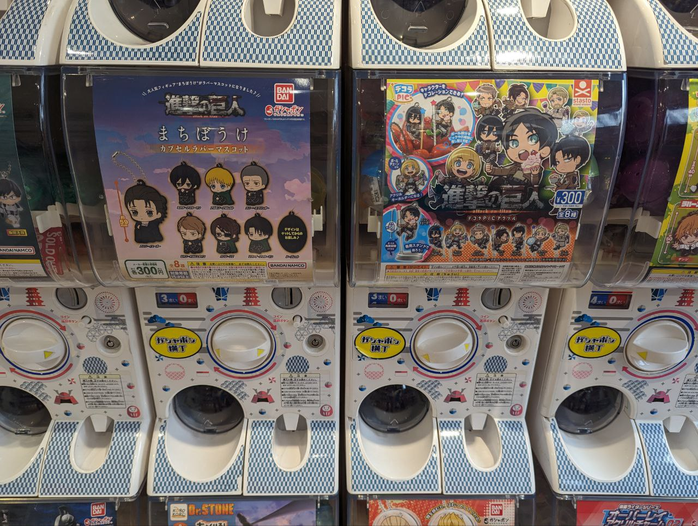
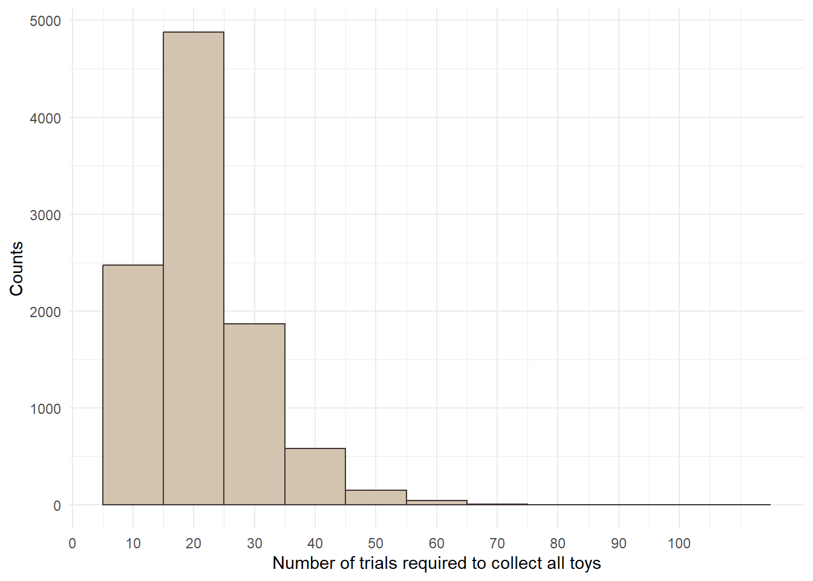
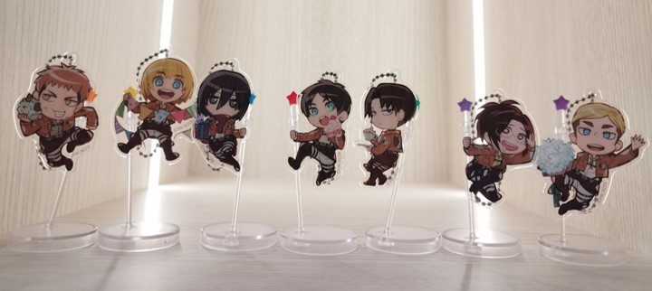

# Listing all possible 8 Attack on Titan character gachapon toys
gachapons <- c("Eren", "Mikasa", "Armin", "Erwin", "Levi", "Hange", "Jean", "Zeke")
# Creating a function to simulate collecting of the gachapons
sim_gachapon <- function(){
trials <- 0
sample_list <- list()
while(length(unique(sample_list))<8) {
x <- sample(gachapons, 1)
sample_list <- append(sample_list, x)
trials <- trials + 1
}
trials
}Gachapon, also known as capsule toys, is a super popular toy culture in Japan that started since the 1960s. These small plastic toys are bought from coin-operated vending machines in a lottery-like manner, in which each purchase is a random toy from a pool of selections.
In my recent trip to Tokyo, I was attracted to collect a whole set of gachapon toys on my favorite anime, Attack on Titan (AOT). Unsurprisingly, I got a few duplicates after numerous attempts and failed to collect all eight unique toy characters. Akin to the coupon collector’s problem, this gachapon frustration questions how many toys do I need to buy to draw every toy at least once? This blog post presents the use of Euler’s approximation for harmonic sums to answer this question and simulation using R to verify this formula.

The Gachapon Problem
The gachapon concept works like a lottery or a lucky draw. Typically, each gachapon machine has its own pool of prizes, with illustrations of all possible toys illustrated on the front of the machine. It is common that fans of collectible toys would like to obtain the entire set of them. Hence, this presents an interesting probability question. Given a certain number of possible toys in a machine, how many gachapons on average do you need to buy to collect all the possible toys?
Mathematically, this is referred to as the expected value of the number of gachapons to get all possible toys. Let me illustrate this calculation using my experience of playing a gachapon machine with 8 possible toys as an example.
\[ P_{i} = \frac{N - i}{N} \]
First, the probability of collecting a new toy, Pi , is determined using the simple formula above, in which N refers to the total number of possible toys and i represents the number of toys collected. In this example, N equals 8 since we have eight possible toys to collect. With our first gachapon purchase, we are guaranteed to get a new toy. However, with the second gachapon, the probability of getting a new toy would be \(\frac{8 - 1}{8}\) = \(\frac{7}{8}\). The expected value can be computed using its reciprocal, \(\frac{1}{P~i~}\) , which can also be written as \(\frac{N}{N - i}\). Thus, after getting the first toy, the expected number of gachapons to get the second new toy is \(\frac{8}{7}\). Logically, this number increases with each new toy collected as the probability of getting a new toy decreases.
To answer our probability question, we need to sum up all expected values of collecting a new toy till the eighth toy. This is expressed the following formula:
\[ E(collecting\ all\ new\ toys)= \frac{8}{8} + \frac{8}{7} + ...+\frac{8}{1} \]
This can also be expressed in another manner as:
\[ E(collecting\ all\ new\ toys)= 8 (\frac{1}{8} + \frac{1}{7} + ...+\frac{1}{1})≈ 21.74 \]
Rewriting the equation in the format of (\(\frac{1}{8}\) + \(\frac{1}{7}\) + …+\(\frac{1}{1}\)) is to show that this is a harmonic series, which refers to the sum of the reciprocals of the first n natural numbers. Solving the equation gives us an approximate value of 21.74, which means that we would need to buy 22 gachapons on average to collect all eight possible toys.
Euler’s Approximation for Harmonic Sums
Obviously, with larger N number, this would be challenging to compute manually. Thankfully, there’s a simpler and faster formula that can be applied to solve our gachapon problem.
\[ n * ln(n) + 0.577n + 0.5 \]
The above is an approximation formula developed by Swiss mathematician Leonhard Euler, in which n refers to the total number of possible toys and 0.577 is a special value known as the Euler’s constant. Plugging 8 into this formula will derive a similar value of 21.75 as our manual calculation above. Thus, this formula can simply be applied to help inform us on our gachapon attempts.
Simulation of the Gachapon Problem
Let’s now try simulating the gachapon problem using R programming language to test whether our calculation works. First, we create a list that contains all 8 possible toys from the gachapon machine. If you are an AOT fan, you would be familiar with the character names! We then create a function to simulate an attempt to play the gachapon machine till all 8 toys are collected and returns the number of trials required. This can be done by incorporating a while loop within the function. Please see the relevant code below.
Our calculations above tell us the expected number of trials required to collect all 8 possible toys on average. The actual number is expected to have some variation. Thus, let’s simulate a large number of trials to see the variance and whether the average agrees with what we have calculated. In the code below, we simulate a total number of 10 000 trials and computes the average number of trials required to collect all possible toys.
set.seed(1234)
simlist <- replicate(10000,sim_gachapon())
mean(simlist)[1] 21.8314
The average value from the simulations is 21.83, which approximates our calculated values closely. Based on these results, we can infer that when an individual plays a similar gachapon machine, he or she would likely have to buy about 22 gachapons to collect all the possible toys. This is also reflected clearly in the histogram visualisation above, in which the number of trials required to collect all toys fall mostly between 15 and 25.
range(simlist)[1] 8 109It is important to note the variance in such lottery-like games. Indeed, the range of trials derived from our simulation is between 8 and 109! On a lucky day, it is possible to collect all 8 toys within the minimum number of 8 trials. However, if you are unlucky, you may require over 100 trials albeit the likelihood is very low.

Conclusion
This blog post presented the use of Euler’s approximation for harmonic sums to inform us on the expected number of gachapons required to collect all possible toys. Many collectibles such as trading card games adopt similar lottery-like concept these days. Thus, this useful formula can be applied to better help you in making a decision on your pursuit of such collectibles. In reality, I collected a total of 7 unique toys from a total of 14 trial attempts. Perhaps, 8 more trials could have gotten me the last toy. Also, perhaps not. This is the nature of gachapon after all.